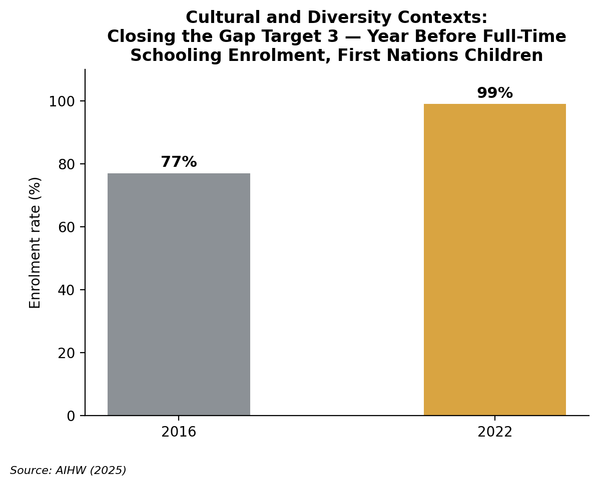

Cultural and Diversity Contexts
Aboriginal and Torres Strait Islander families, and refugee and humanitarian entrant families, and their implications for early childhood education and care.
Understanding the Context
Aboriginal and Torres Strait Islander families come from diverse Nations, different languages and kinship systems. Refugee and humanitarian entrants experience protection following persecution or conflict. Cultural authority is specific to Country, while refugee circumstances relate to language and location specific to settlement stages.
Ecological perspectives show how development relates to family, ECEC, community, settlement and policy – not culture alone (Lau et al., 2018; Sanagavarapu, 2022). The concept of cultural hegemony reveals a First Nations perspective of privileged Western knowledge while excluding Country, kinship and Aboriginal systems and ways of knowing things and doing activities (Grace & Menzies, 2022). Early childhood education can counteract such patterns within communities that have a role in curriculum and decisions – educator-controlled pathways can actually re-create such outcomes (Sisson et al., 2025). Culture is a strength, but risks relate to colonisation, racism, displacement and unsafe systems.
Impact on Children and Families
Racism, language exclusion, losing cultural continuity and becoming displaced or engaging with unfamiliar institutions all impact trust, communication and regulation, attendance and participation. The outcomes are not inevitable – refugee children show varied adjustment (Lau et al., 2018). For First Nations children, excluding Country, kinship and community knowledge affects a sense of belonging; engagement must recognise families as holders of that knowledge (Sisson et al., 2025).
Country, Elders, kin and community can add significant knowledge, collective identity and connection across all areas of a child's experience (Sisson et al., 2025). The language used within the home maintains family communication while children gain proficiency in English (Australian Children's Education and Care Quality Authority [ACECQA], 2022; Sanagavarapu, 2022). Such services will pronounce names correctly and make use of qualified interpreters in maintaining relationships. Educators must not diagnose trauma or migration experiences.
Social Policy and Australian Responses
Closing the Gap Target 3 aimed for 95% enrolment in Year Before Full-Time Schooling programs by 2025. The estimate rose from 77% in 2016 to 99% in 2022 – though with uncertainty around whether such enrolment represented attendance, quality or cultural safety (Australian Institute of Health and Welfare [AIHW], 2025). The Humanitarian Program provides 20,000 places in 2025–26, but capacity does not reflect participation in ECEC or settlement quality (Australian Government Department of Home Affairs, 2026).
In NSW, First Steps 2026–2030 focuses on community-controlled implementation and Aboriginal workforce development – the co-design process should involve a transfer of power instead of token consultation. The NSW Refugee Health Plan 2022–2027 aims for culturally responsive and trauma-informed care and interpreting. Educators support navigation of complex systems and referrals with consent while clinicians provide assessments – interpreter and specialist availability may impact regional implementation (NSW Health, 2022).

Strategies for Practice
Co-construct engagement
Shared design challenges allow educators to relinquish control over inclusion (Sisson et al., 2025). Find out how families would like to participate in the program, and consult with Aboriginal organisations, Elders and representatives of the refugee communities in which the children reside.
Trust and shared authority
Sustain culture and language
Culture and language are linked to a child's sense of identity and inclusion into a community (ACECQA, 2022, 2024a). Use resources on Country that are locally approved, ensure names are correctly pronounced, and include words in the language children call home.
Identity and continuity
Communicate responsively
Unfamiliar systems and language barriers can restrict participation (Sanagavarapu, 2022). Work with qualified interpreters – translated or visual information alongside teach-back techniques; never use children for confidential interpreting.
Understanding and agency
Provide relational, trauma-aware continuity
Adjustment varies; stable relationships may support engagement (Lau et al., 2018). Maintain a key educator and routines whilst offering choices and only referring concerns rather than presuming or diagnosing trauma.
Regulation and participation
Practise anti-bias education
Cultural responsiveness demands examining institutional assumptions, not occasional celebrations (ACECQA, 2024b; Grace & Menzies, 2022). Audit books, displays and policies to counteract stereotypes and address perspectives throughout the year.
Empathy and fairness
Community and Professional Partnerships
Aboriginal Child and Family Centres
Provide culturally safe ECEC, health and family support within participating communities. With family agreement, contact the relevant local centre or Aboriginal Community Controlled Organisation.
Visit website →NSW Aboriginal Education Consultative Group
Represent the community perspective. Consult the local AECG regarding curriculum and participation alongside family engagement.
Visit website →Settlement Services International
Delivers settlement assistance within specified NSW regions. With consent, connect families with SSI or a local provider.
Visit website →NSW Refugee Health Service
Provides refugee-focused health assessment and referral. Connect families requesting specialist healthcare.
Visit website →STARTTS
Provides culturally relevant counselling and consultation. Refer with consent where specialist support is indicated; educators do not diagnose.
Visit website →Resources for Educators and Children
Projects, Programs or Websites
Reconciliation Australia. Educators: select locally guided resources to establish informed respect rather than tokenism.
SNAICC. Educators and families: examine community-led integrated support for a deeper understanding of resilience and self-determination.
Foundation House. Educators: strengthen trauma-informed approaches for refugee-background families; adapt Victorian referral information for NSW.
STARTTS. Practitioners: develop culturally responsive, relational and non-diagnostic approaches for children under six.
Storybooks
Discuss a Darug baby-smoking ceremony with local guidance and support for respect, identity and belonging.
Explore First Nations role models as support for pride and belonging.
Discuss fictional friendship, language and arrival as support for empathy and hope.
Read both ways to consider themes of exclusion, welcome and empathy for families seeking safety.
Videos, Shows or Podcasts
Hear a Wiradjuri artist discuss stories and friendship, encouraging curiosity and confidence.
Connect viewing with local guidance to support respect and responsibility for Country.
Use fictional perspective-taking to discuss friendship, hope and resilience.
References
Australian Children's Education and Care Quality Authority. (2022). Belonging, being and becoming: The Early Years Learning Framework for Australia (Version 2.0). www.acecqa.gov.au/sites/default/files/2023-01/EYLF-2022-V2.0.pdf
Australian Children's Education and Care Quality Authority. (2024a). EYLF information sheet: Aboriginal and Torres Strait Islander perspectives. www.acecqa.gov.au/eylf-information-sheet-aboriginal-and-torres-strait-islander-perspectives
Australian Children's Education and Care Quality Authority. (2024b). EYLF information sheet: Cultural responsiveness. www.acecqa.gov.au/information-sheet-eylf-practices-cultural-responsiveness
Australian Government Department of Home Affairs. (2026). About the refugee and humanitarian program. immi.homeaffairs.gov.au/what-we-do/refugee-and-humanitarian-program/about-the-program/about-the-program
Australian Institute of Health and Welfare. (2025, March 6). Closing the Gap targets: Key findings and implications. www.aihw.gov.au/reports/indigenous-australians/closing-the-gap-targets-key-findings-implications/contents/early-childhood-education
Grace, R., & Menzies, K. (2022). The Stolen Generations of Aboriginal and Torres Strait Islander children: Understanding the impact of cultural hegemony in policy and intervention. In R. Grace, J. Bowes, & C. Woodrow (Eds.), Children, families and communities: Contexts and consequences (6th ed., pp. 194–210). Oxford University Press.
Lau, W., Silove, D., Edwards, B., Forbes, D., Bryant, R., McFarlane, A., Hadzi-Pavlovic, D., Steel, Z., Nickerson, A., Van Hooff, M., Felmingham, K., Cowlishaw, S., Alkemade, N., Kartal, D., & O'Donnell, M. (2018). Adjustment of refugee children and adolescents in Australia: Outcomes from wave three of the Building a New Life in Australia study. BMC Medicine, 16, Article 157. doi.org/10.1186/s12916-018-1124-5
NSW Department of Education. (2026). First Steps Aboriginal Children's Early Learning Strategy 2026–2030. education.nsw.gov.au/content/dam/main-education/early-childhood-education/operating-an-early-childhood-education-service/media/documents/making-services-accessible-for-all-children/First_Steps_Strategy_2026_-_2030.PDF
NSW Health. (2022). NSW Refugee Health Plan 2022–2027. www.health.nsw.gov.au/multicultural/Pages/refugee-health-plan.aspx
Sanagavarapu, P. (2022). Refugee children: Supporting families in transitions. In R. Grace, J. Bowes, & C. Woodrow (Eds.), Children, families and communities: Contexts and consequences (6th ed., pp. 78–94). Oxford University Press.
Sisson, J. H., Rigney, L. I., Hattam, R., & Morrison, A. (2025). Co-constructed engagement with Australian Aboriginal families in early childhood education. Teachers and Teaching, 31(1), 16–30. doi.org/10.1080/13540602.2024.2328014
ABC Kids listen. (2026, July 13). A Littler Yarn with Jazz Money [Audio podcast episode]. In Little Yarns. Australian Broadcasting Corporation. www.abc.net.au/kidslisten/programs/little-yarns/littler-yarn-jazz-money/106832514
Australian Broadcasting Corporation. (n.d.-a). Play School: Acknowledgement of Country [TV episode]. ABC Kids. www.abc.net.au/abckids/programs/play-school/extension-ideas/play-school-acknowledgement-of-country/11382434
Australian Broadcasting Corporation. (n.d.-b). Play School Story Time: Amira's suitcase [TV series episode]. ABC iview. iview.abc.net.au/show/play-school-story-time/series/5/video/CK2109H011S00
Australian Broadcasting Corporation. (n.d.-c). Play School: Hand in hand [Video]. ABC Kids. www.abc.net.au/abckids/programs/play-school/extension-ideas/hand-in-hand/12384202
Briggs, A. (2020). Our home, our heartbeat (K. Moon & R. Sarra, Illus.). Hardie Grant Children's Publishing.
Foundation House. (n.d.). Early Years. foundationhouse.org.au/specialised-programs/early-years/
Kobald, I. (2014). My two blankets (F. Blackwood, Illus.). Little Hare.
NSW Aboriginal Education Consultative Group. (n.d.). Early years support. www.aecg.nsw.edu.au/early-years-support
NSW Department of Communities and Justice. (2025, July 8). Aboriginal Child and Family Centres. dcj.nsw.gov.au/service-providers/working-with-us/how-we-work-with-you/aboriginal-community-controlled-organisations/aboriginal-child-and-family-centres.html
Reconciliation Australia. (n.d.). Narragunnawali curriculum resources. www.narragunnawali.org.au/curriculum-resources?year=1
Settlement Services International. (n.d.). Humanitarian Settlement Program. www.ssi.org.au/our-services/settlement/humanitarian-settlement-program-hsp/
Seymour, J. (2019). Baby business. Magabala Books.
SNAICC – National Voice for Our Children. (n.d.). Connected Beginnings. www.snaicc.org.au/our-work/early-childhood-development/connected-beginnings/
South Western Sydney Local Health District. (n.d.). NSW Refugee Health Service. www.swslhd.health.nsw.gov.au/refugee/
STARTTS. (n.d.-a). Early childhood with families from refugee backgrounds. startts.org.au/training/introductory-workshops/clinical-infants-workshop/
STARTTS. (n.d.-b). Healing refugee trauma: Rebuilding lives. startts.org.au/
Temple, K., & Temple, J. (2018). Room on our rock (T. R. Baynton, Illus.). Scholastic Australia.